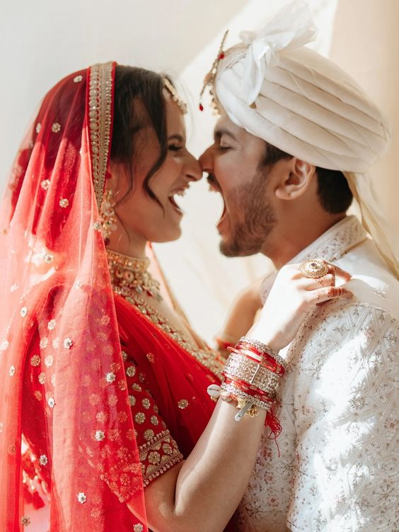

Stress-free doesn't mean effortless — it means the effort goes into the right things at the right time, instead of everything landing in the last six weeks at once. Here's the sequence that consistently keeps couples calm.
1. Start 8-12 months out, not 3
The single biggest predictor of a smooth wedding is lead time. Popular Bengaluru venues and photographers book out 8-12 months ahead during peak season (November-February). Starting early doesn't mean deciding everything immediately — it means the good options are still available when you're ready to decide.
2. Set a budget with a 10-15% buffer built in
Every wedding has surprise costs — an extra function, a décor upgrade, last-minute guests. Budgeting for the buffer up front means a surprise expense is a line item, not a crisis.
3. Book venue and photographer first
These two book out the fastest and are the hardest to substitute later. Everything else — décor, catering, entertainment — has more available supply and more flexibility on timing.
4. Put everything in one shared document
Budget, vendor contacts, timelines, guest list — split across five apps and a dozen WhatsApp threads, small details get lost. One shared checklist that both partners (and families, where relevant) can see cuts down on "wait, did we already decide this?" conversations.
5. Do a tasting before you finalize catering
Menus that sound great on paper don't always land the same way in person. A tasting session before signing off protects against the one vendor decision that's hardest to walk back once guests are invited.
6. Assign a day-of point of contact — and make sure it isn't you
On the actual wedding day, you shouldn't be the one fielding vendor questions about where the flower delivery goes. A designated coordinator (planner, family member, or friend willing to take it seriously) handling logistics lets you actually be present for your own wedding.
7. Batch similar decisions together
Spreading décor meetings, catering tastings, and vendor calls out over months sounds manageable, but decision fatigue compounds. Grouping similar decisions into focused weeks keeps your judgment sharper for each one.
The through-line
Every one of these tips is really the same idea: decide the big, hard-to-reverse things early, and protect your bandwidth for the decisions that actually need your personal taste. That's exactly the gap a planner fills — handling the sequencing and vendor logistics so your decisions stay about the wedding you actually want, not just whatever's still available.